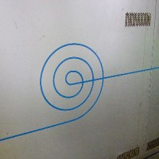
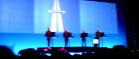
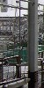
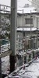
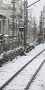
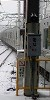
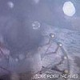

strange music page
* * * 2002.12
|

|
#営団地下鉄のポスターを貼る板。
だいたいのポスターよりもカッコイイと思う。
|
|
2002.11 / 2003.1
|
-2002.12.25 暖かい冬を
#日曜の朝に友達が狭い部屋に引っ越してしまうと言うので、色んなモノを貰いに行きました。一人暮らしして4年くらい経つのですがよーやく念願の石油ファンヒーターをゲットする事ができました。
いやもう暖かいのなんのって、部屋の中でコートとか着てた今までの生活は何だったんだろうか。今日初めて金持ちのアラブ人を許せる気分になりました。いやまじで。
えっと、小田扉のマンガの「○被警察24時」（'被'はマルの中に入る）を買いました。ギャグマンガからシュールでシリアスな話に2,3ページですっ飛んでくよな。あと渋谷のTUTAYAでCosmic Jokersを借りました、頭クラクラのドイツ人セッション大会、つまんないけど聴いてられる。
♪eberhard weber/fluid rustle
-2002.12.21 いろいろ
#飯島晃/コンボ・ラキアスの音楽帳をタワレコで。このCDの情報って検索かけてもほどんど出てきません、最近のフォークっぽい音響系好きとかJohn Fahey好きとかにも受けそうな感じするんですけど、皆様こちらはノーチェックなんですかね？(飯島晃さんは既に他界・・・)
あと、ルナパーク・アンサンブル/虫喰いマンダラとSOUL-CIALIST ESCAPE/LOST HOMELANDと溝口肇/A Pretty Danceを、渋谷のTSUTAYAで。ルナパークアンサンブルはイイです、大熊亘さんの80年代の音。
♪飯島晃/コンボ・ラキアスの音楽帳
-2002.12.13 kraftwerk

#もうこれ書いてるの一週間も経っちゃってるんですけど、幕張メッセのELECTRAGLIDEでKRAFTWERKを見てきました。
死ぬまでに見たい（いや、俺じゃなくて、あっちが）と思ってました。4人がノートパソコンに並んで微動だにせず、ニコリともせず（右から２番目だけちょっと挙動不審だったけど）キカイの音楽を繰り出してました。
あ、会場ではsasakidelicさん、j-u-nさん(お子様誕生、おめでとうございます！)、かおりんさんなどにお会いしました。どうもでしたー.。
♪kraftwerk/expo 2000
-2002.12.12 stereolab
#stereolabのmary hansenが交通事故で死んじゃったみたいです。「モノは壊れる、ヒトは死ぬ」てか。
前から時々見てるんですけど、ここすげぇなぁ・・・同い年かよ。
♪stereolab/iron man
-2002.12.9 snowing
 |
 |
 |
 |
#うー、寒かった。
日曜は友達の結婚式で水戸に行ってました、あっちもとても寒かったんですけど。
とりあえず結婚式のBGMに、「BUGGLES/VIDEO KILLED THE RADIO START」と「YES/SWEETNESS」が使われていたことはここのページで書かねばと思って。
ほんと寒いっす。転職希望。
♪amon duul/psychedelic underground
-2002.12.7

#タワレコのカードがMAXまで溜まったので、前から欲しかった篠田昌巳/COMPOSTELAを買ってきました。やっぱりとてもイイです。
あとこちらも気になってたTONE POEM ARCHIVESっていうオムニバス。SAKANAとかNOVO TONOとか渚にてとかLOVEJOYとか。
ついでにSTUDIO VOICEで「伝説の名盤300選」ってのやってたんで、久々に買っちゃいました。ちょっと偏ってるよーな気もしますが(こちら側に)
ってあれ？タワレコのカード分だけ買うつもりだったのに・・・
♪TONE POEM ARCHIVES
-2002.12.5 一生不覚
#えーと新宿PIT-INNで12/3の一生不覚(芳垣安洋+佐藤研二)を見てきました。次の日のVincent Atomicsも見たかったんだけど、朝起きたら喉痛+頭痛で、会社も休んで1日中寝てました。いやほんとに寝た、変な夢ばっかり見た気がするけど、全部忘れた。
ちなみにそのほぼ1日中寝てた日の中で目を覚ましていたレアな時間の中で、三年B組金八先生を見てました。
久々に色んな所を見てたら、面白い所が有ったのでリンクをちょっと追加(許可取ってないけど)。ここのレーベルカタログってちょっと凄まじいです。もう一個はモノノフォンて所。ご存知の方多いかもしれませんけど、非常に密度が濃いです。ただただ敬服。
♪tortoise/tnt
-2002.12.1 HDD昇天
#Linuxに使ってたHDDが突然壊れました。電源入れても何も回ってません。
あ、友達にVIEWSICでやってたTrue People's Celebrationの映像をビデオに取ってもらって、今見てます。くーやっぱり2日目も行けばよかったかな。
♪rei harakami